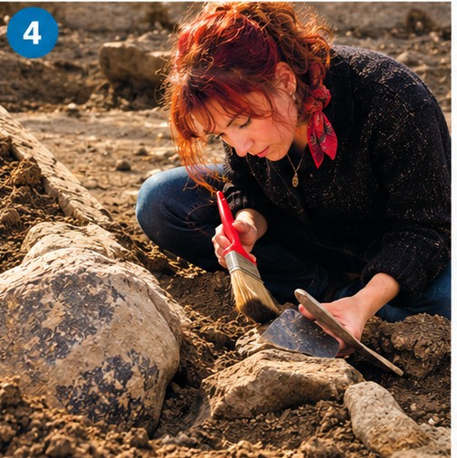

Wordlist — professions & personal qualities
Study these words and phrases — you'll need them for the photo-description task next.
| word / phrase | meaning | example |
|---|---|---|
| an eye for detail | the ability to notice small things and check accuracy carefully | Editing work requires an eye for detail that few people have. |
| creativity | the use of imagination to produce original ideas | The role calls for creativity as much as technical skill. |
| an enquiring mind | a natural curiosity and desire to investigate and understand things | Good researchers tend to have an enquiring mind. |
| the ability to work in a team | being able to cooperate effectively with others toward a shared goal | The ability to work in a team is essential in most modern workplaces. |
| vision | the ability to think about and plan the future with imagination | The company's success owes a lot to its founder's vision. |
| an outgoing personality | being sociable, confident, and comfortable talking to others | Sales roles often suit people with an outgoing personality. |
| good communication skills | the ability to express ideas clearly, in speech or in writing | Managers need good communication skills to lead a team effectively. |
| management skills | the ability to organise people, time, and resources effectively | She developed strong management skills during her time as team leader. |
| vocational training | practical training for a specific job or trade, rather than academic study | Vocational training can lead directly into skilled employment. |
| high achiever | someone who is very successful, especially in their studies or career | The scholarship is aimed at high achievers from low-income backgrounds. |
| register (verb) | to formally sign up for something, such as an event or course | Students must register for the fair in advance. |
| qualifications | official records of skills or achievements, such as degrees or certificates | The job requires specific qualifications in engineering. |
| graduate (noun/verb) | someone who has completed a degree; to complete a degree | Most graduates take several months to find their first job. |
| career prospects | the likely future opportunities and progress in someone's career | The course is popular because of its strong career prospects. |
| potential employer | a company or person who might offer someone a job in the future | The fair gives students a chance to meet potential employers directly. |
Match each word or phrase with its meaning.
1. an eye for detail
2. creativity
3. an enquiring mind
4. the ability to work in a team
5. vision
6. an outgoing personality
7. good communication skills
8. management skills
Starting off — which quality does each photo show?
Match each photo to the personal quality it best illustrates. Some photos could arguably illustrate more than one — choose the quality you think fits best.
Photo 1
Photo 2
Photo 3

Photo 4
Photo 5
Photo 6
Note for Alan: several of these photos genuinely could fit more than one quality (I've picked what I think is the strongest fit for each), so if a student argues convincingly for a different answer with good reasoning, that's a sign the exercise is working as intended, not that they're wrong.
Here's a worked example — a model description of Photo 1, using its matched quality.
This photograph shows a scientist working carefully in a laboratory, using a microscope to examine samples closely. Her work clearly requires an enquiring mind, since research of this kind depends on curiosity and a genuine desire to understand how something works. She must also be extremely precise, checking every detail of her results before drawing any conclusions, which suggests she needs a methodical, scientific approach to her job.
Now describe each of these professions yourself, using the quality you matched to it. Write at least 50 words for each.
Photo 2
Photo 3
Photo 4
Photo 5
Photo 6
Speaking — careers & choices
Jot down a few notes for each question if it helps, then record your answer. You only get one attempt per question, so make sure you're ready before you start recording.
Useful phrases:
- "Ideally, I'd love to go into..."
- "What appeals to me most about it is..."
- "I've always been drawn to..."
Useful phrases:
- "Above all, you'd need..."
- "It's hard to succeed in that field without..."
- "I'd say ... matters more than people often assume."
Useful phrases:
- "There are compelling arguments on both sides."
- "On balance, I lean towards..."
- "Specialising early has the advantage of..., but the downside is..."
Useful phrases:
- "It very much depends on the field, but in my case..."
- "A degree certainly helps, though it's by no means essential."
- "Increasingly, employers seem to value... over formal qualifications."
Useful phrases:
- "Undoubtedly — job security isn't what it used to be."
- "This shift can largely be put down to..."
- "Unlike previous generations, people today tend to..."
Video — Choosing the Right Career
Watch the video, then complete the three parts below.
Part 1 — choose the correct answer.
1. Why does the video recommend starting with your hobbies when choosing a career?
2. What example does the video give to show that hobbies and skills can be different?
3. Why should people consider their personality traits when choosing a career?
4. What can industry experts help potential employees understand?
5. Why does the video recommend researching the job market?
Part 2 — complete the sentences with a word from the box.
passionate · skills · traits · progression · values
1. Before choosing a career, think about the activities and subjects you are about.
2. In addition to your hobbies, you should make a list of the that you possess.
3. Your personality can influence which careers are suitable for you.
4. When researching the job market, consider whether the career offers opportunities for career .
5. Your core can help you find a career that is personally fulfilling.
Part 3 — match the vocabulary with the correct definition.
1. pursue
2. forte
3. trait
4. anxious
5. insight
6. progression
7. secure a job
8. fulfilling
9. core values
10. narrow down
Listening Section 1 — Graduate Fair Registration
Before you listen, read this advert and think about the questions below — just discuss them, no need to write anything yet.
Are you a high achiever?
Do you want a job as soon as you graduate? The world's biggest companies in IT, marketing, finance, and telecoms want graduates! Visit the fair and register with them now!
1. What do you think happens at a graduate fair? Why do you think they are useful?
2. Why do many jobs require you to have a university degree? When is vocational training more useful than a university degree?
3. What might improve a graduate's chances of getting the job they want?
Now listen and complete the form below. Write NO MORE THAN THREE WORDS AND/OR A NUMBER for each answer.
Graduate Fair Registration — TGS Global
Graduate details
Area of work: Marketing (example)
Name: Dominika
Nationality:
Email address: @qmail.com
University: London
Type of course: BA
Date available:
Personal information
Other activities: organised a for charity
Interests:
Previous job(s):
Career plans: wants to be a
Heard about fair through:
Note for Alan: these ten fields aren't graded yet — I don't have the recording or an answer key for this one, so I can't know what Dominika actually says. Send me the audio plus the answer key and I'll wire up auto-checking to match, exactly like the other listening tasks.
Vocabulary — dependent prepositions
Complete these extracts by writing a preposition in each gap. Sometimes more than one answer is possible.
1. Obviously our interest is related the class of degree that you get.
2. I haven't actually had any experience business yet.
3. I want to concentrate getting my qualifications first.
4. So when would you be available an interview?
5. I'm quite good cooking.
6. Have you done any other work in the past that would be relevant a marketing career?
Choose the correct preposition in each sentence.
1. The money spent ___ research was more than expected.
2. Some bosses are not very sensitive ___ their employees' needs.
3. The company has a reputation ___ producing top-quality toys.
4. It is important to have confidence ___ your abilities.
5. A lot of students participated ___ the job fair.
6. Working parents have little time to take care ___ their children.
IELTS candidates often make mistakes with prepositions after adjectives and verbs. Find and correct the mistakes in these sentences by changing or adding a preposition.
1. To be a leader, you have to compete with/against your colleagues. (example — already corrected)
2. Youngsters today are better prepared with working life.
3. It is sometimes hard to get involved into your studies.
4. Universities should provide students the facilities they need.
5. Managers have to be responsible to the staff below them.
6. The government should pay more attention to the education of women.
7. In my job, I have to deal with many different types of people.
2. Youngsters today are better prepared for working life.
3. It is sometimes hard to get involved in your studies.
4. Universities should provide students with the facilities they need.
5. Managers have to be responsible for the staff below them.
6. No mistake — "pay attention to" is correct as written.
7. No mistake — "deal with" is correct as written.
Speaking Part 1 — work & study
Jot down a few notes for each question if it helps, then record your answer. You only get one attempt per question, so make sure you're ready before you start recording.
Day 2 complete! 🎉
All 7 tasks done. Come back tomorrow for the next day.